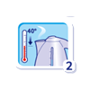
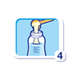
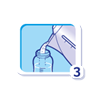
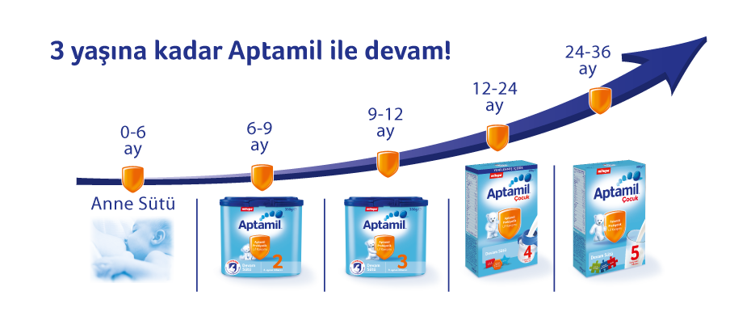
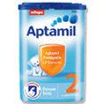
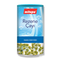
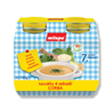
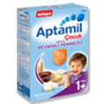
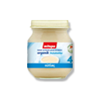
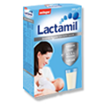

Bagisiklik icin once anne sutu!
- Anne sutu bagisikligi destekler, hastaliklara karsi bebeginizin
direncini artirir, bu yuzden bebeginizi mumkun oldugunca emzirmelisiniz.
- Anne sutunun yetmedigi durumlarda ise bebeginizi Aptamil Anne Sutu
Arastirma Merkezi tarafindan gelistirilen, yenilenmis icerigi ile bebeginizin
ihtiyaclarina ozel, Aptamil Devam Sutleri ile besleyebilirsiniz.
Enerji ve Besin Ogeleri
|
Enerji
|
280kj |
Mineraller |
|
67kcal |
Potasyum |
74mg |
| Yag |
3g |
Klorur |
47mg |
| -Doymus y.a |
1.2g |
Kalsiyum |
65mg |
| -Tekli doymamis y.a |
1.1g |
Fosfor |
36mg |
| Coklu doymamis y.a |
0.5g |
Magnezyum |
4,8mg |
| Karbonhidrat |
8,6g |
Demir |
1mg |
| Laktoz |
6,1g |
Cinko |
0,51mg |
| Prebiyotik Lifler |
0,8g |
Bakir |
43mcg |
| Protein |
1,4g |
Mangan |
7mcg |
| Sodyum |
23mg |
Florur |
3mcg |
| Vitaminler |
|
Selenyum |
1,7mcg |
| A vitamini |
66mcg RE |
Iyot |
13mcg |
| D vitamini |
1,4mcg |
|
|
| E vitamini |
1,2mcg |
Diger |
|
| K vitamini |
5mcg |
L-katimin |
0,95mg |
| B1 vitamini |
120mcg |
Inositol |
3,6mg |
| B2 vitamini |
120mcg |
Inositol |
3,6mg |
| B3 vitamini |
0,43mg |
Taurin |
5,2mg |
| Pantotenik Asit |
344mcg |
Nukleotidler |
3,2mg |
| B6 vitamini |
39mcg |
| Folik Asit |
16mcg |
| B12 vitamini |
0,18mcg |
| Biyotin |
1,4mcg |
| C vitamini |
9,9mg |
Asagidaki tabloda bebeginizin gunluk sut ihtiyacini gorebilirsiniz.
Beslenme Onerisi
6.aydan itibaren her gun en az yarim litre Aptamil 2 ile bebeginizin
gunluk sut ihtiyacini karsiliyabilir, icerigindeki Prebiyotik Lif karisimi
ile bagisikligini desteklemeye yardimci olabilirsiniz. 9 aydan sonra
Aptamil 3'e gecebilirsiniz.
Bebeginizin Bebek Sutunu Hazirlarken




Urun ailemiz






AnneBebek Kulubu'umuze ucretsiz uye olun,
Bebek beslenmesi ve bakimi konusundaki onerilerimizden faydalanin.
Bebeginize ozel hediye paketlerimizden yararlanin.